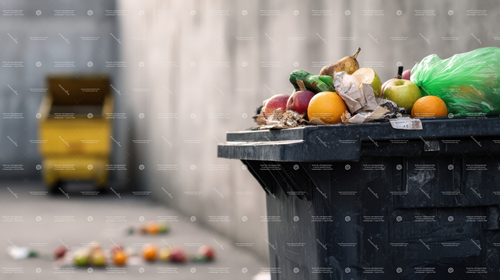
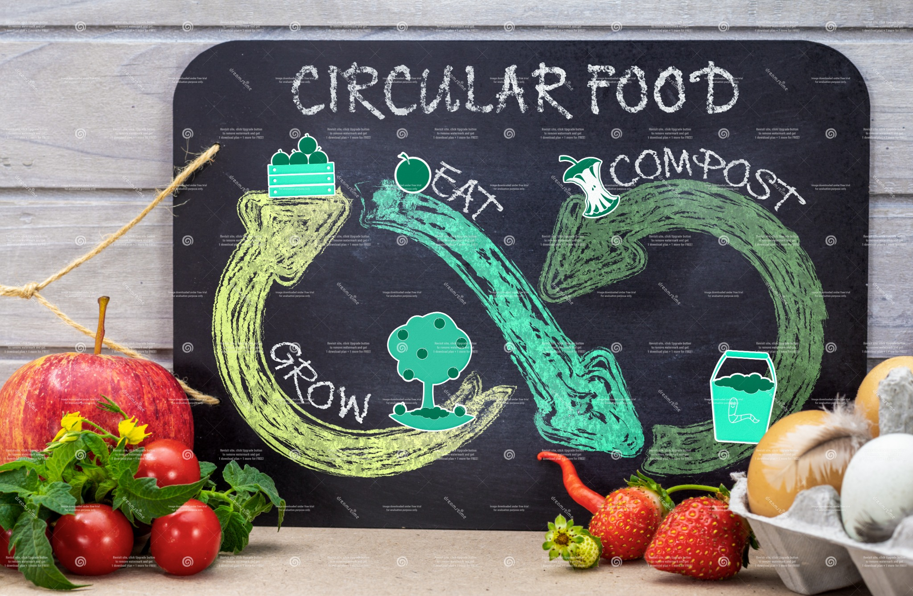

Skip to content
Home
Volunteer
Buy Local
Cut Waste
About
Resources
High Contrast
Large Text
Dyslexia Font
Cut food waste
Plan & store smart

Prevent waste

Compost and cycle
EPA Food: Too Good To Waste
Open
Save The Food
Open
ReFED Insights
Open